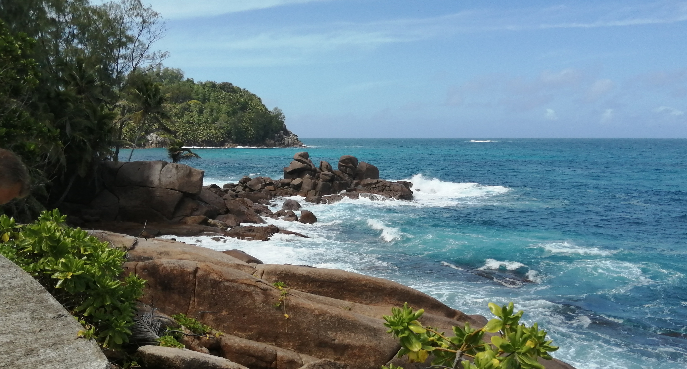

VÍTEJTE

Co se tu nachází
Vítejte na mé stránce. Jmenuji se David Boček a jsem studentem VŠB oboru Informatika. Tento web obsahuje dvě hlavní části. V první sekci, nazvané Osobní profil, naleznete můj životopis, přehled dovedností a informace o vzdělání. Druhá sekce, jeden ze školních projektů, se nachází jeden z projektů, které byli zadány tento semestr.
Osobní Profil
V osobním profilu se nachází můj životopis, mé zkušenosti a taktéž mé zájmy a dovednosti. Jsem človek, který snil si jednou vytvořit vlastní 1 až 2 hry, dle svých pravidel a hry, které ...
VíceProjekty semestru
V projektech semestru se nachází projekty, které byli zadány do data 4. Listopadu 2025. Mezi projekty se nachází projekt do ZIT (tato stránka) a do UPR (Tower defence) v programovacím jazyku C pomocí SDL2 Knihovny.
Více